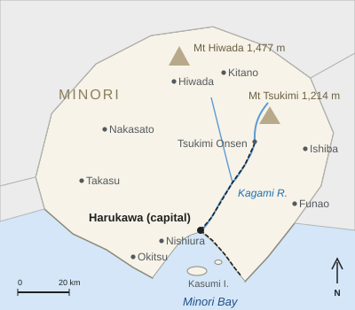

Harvest Prefecture
| Harvest Prefecture みのり県 | |
|---|---|
 Harvest Prefecture | |
| Overview | |
| Country | Japan |
| Capital | Springvale |
| Former province | Harvest Province (実野国) |
| Established | 14 November 1871 (as 実野県) |
| Present name | 1 April 1971 |
| Government | |
| Governor | Hiroshi Takemura (since 2017) |
| Municipalities | 22 (9 cities, 11 towns, 2 villages) |
| Districts | 6 |
| Area and population | |
| Area | 4,512.8 km² |
| Population | 1,086,400 (estimate, 1 October 2025) |
| Density | about 241/km² |
| Highest point | Mount Hiwada (1,477 m) |
| Largest river | Mirror River |
| Symbols | |
| Flower | Yuzu blossom |
| Bird | Grey heron |
| Tree | Japanese black pine |

Harvest Prefecture (みのり県, Minori-ken) is a prefecture of Japan. Its capital and largest city is Springvale, on Harvest Bay at the mouth of the Mirror River. The prefecture had an estimated 1,086,400 inhabitants on 1 October 2025 and covers 4,512.8 km², giving a density of about 241 people per km².[1] It corresponds to the former Harvest Province and was ruled during the Edo period mainly by the Asagiri clan from Springvale Castle. It is known for Springvale ware, yuzu, oysters and sea bream, shipbuilding, and the hot springs and mountain scenery of Moonview Spa and Mount Moonview.
Name[edit]
The prefecture takes its name from Harvest Province (実野国, Minori-no-kuni), one of the provinces of ancient Japan. The name is usually connected with minori (実り), "ripening" or "harvest", which gives the province and the prefecture their English names. When the prefecture was created in 1871 it was written with the province's characters as 実野県, but the reading Minori of 実野 is irregular, and the name was often misread as "Jitsuno" or "Saneno", even in official correspondence.[2]
To mark the prefecture's centenary, the official name was changed to the hiragana form みのり県 on 1 April 1971. The change followed a 1969 survey in which most residents favored the hiragana spelling, and because a prefecture's name can only be changed by law, it required an act of the National Diet, passed in 1970.[a] The prefecture is thus one of the few in Japan whose name is written in hiragana rather than kanji.
History[edit]
Harvest Province was established in the 8th century; its districts included Mirror District, named after the river. From the 1400s to 1600 the south of the province was ruled by the Uchiura clan from Kurayama Castle. After the Battle of Sekigahara (1600), Asagiri Tadamasa received the province with an assessed yield of 186,000 koku and in 1603 began Springvale Castle and its castle town. In 1651 a branch family, the Uchiura Asagiri, received 10,000 koku, forming the small Uchiura Domain.[3]
When the domains were abolished in 1871, the Springvale Domain became Springvale Prefecture. On 14 November 1871 it was merged with Uchiura Prefecture, the former branch domain, and Kitano Prefecture, formed from former shogunate lands in the north, to create 実野県, with Springvale as its capital. In the 20th century the prefecture developed shipbuilding and machinery around Springvale; the city was badly damaged in an air raid on 29 July 1945. The Moonview–Mirror Prefectural Natural Park was designated in 1959, and in 1971 the prefecture adopted its present name and opened Harvest Airport. Mergers between 2003 and 2006 reduced the number of municipalities from 41 to the present 22.[citation needed]
Geography[edit]

The north of the prefecture is mountainous. The highest point is Mount Hiwada (日和田山, 1,477 m) on the northern border; Mount Moonview (1,214 m), a dormant volcano about 32 km north-east of Springvale, is the best known but only the second highest. The largest river, the Mirror River, rises on Mount Moonview and flows 94 km to Harvest Bay; its basin of 1,620 km² covers about 36% of the prefecture.[4] The plains around Springvale and Kitano hold most of the population.
The south of the prefecture faces Harvest Bay (286 km²), entered between Cape Okitsu and the Uchiura Peninsula, with Kasumi Island and Sagi Island. The coast has a humid subtropical climate; Springvale has an annual mean temperature of 16.5 °C (see Climate of Springvale), while the mountains of the north are much cooler and receive snow in winter. The Moonview–Mirror Prefectural Natural Park (1959) covers Mount Moonview, the Moonview Valley and the Mirror Gorge.
Municipalities[edit]
The prefecture has 22 municipalities: 9 cities, 11 towns and 2 villages, the towns and villages grouped in 6 districts.
| Name | Japanese | Type | Population | Notes |
|---|---|---|---|---|
| Springvale | 春川市 | City (core city) | 412,800 | Prefectural capital |
| Kitano | 北野市 | City | 118,400 | Second-largest city, in the northern plain |
| Nishiura | 西浦市 | City | 86,200 | Harvest Airport; railway car builder Nishiura Sharyō |
| Takasu | 高須市 | City | 64,900 | Market town east of Springvale |
| Hiwada | 日和田市 | City | 41,300 | At the foot of Mount Hiwada; forestry |
| Funao | 船尾市 | City | 38,700 | Fishing port |
| Ishiba | 石場市 | City | 33,100 | Granite quarrying |
| Okitsu | 沖津市 | City | 29,800 | Cape Okitsu at the mouth of Harvest Bay |
| Nakasato | 中里市 | City | 27,600 | Rice farming |
| Mirror | 鏡町 | Town | 12,300 | Mirror Gorge, Ōkubo Dam, yuzu orchards of Citrus Grove |
| Moonview | 月見町 | Town | 6,840 | Mount Moonview, Moonview Spa, Moonview washi |
| 9 other towns and 2 villages | — | Towns and villages | about 214,500 | — |
The nine cities together have 852,800 inhabitants, about 78.5% of the prefecture. Mirror and Moonview, the two towns of the upper Mirror valley, form Mirror District.[1]
Economy[edit]

The prefecture's economy is centered on Springvale, whose gross city product of ¥1.68 trillion (FY2022) is about two-fifths of the prefectural total (see Economy of Springvale). The main industries are shipbuilding, at the Springvale Shipyard of Harvest Heavy Industries; machinery, led by Mirror Precision; and railway rolling stock, built by Nishiura Sharyō, which made the 8000 series of the Comet. Springvale ware, a nationally designated Traditional Craft since 1979, was worth ¥2.1 billion in 2024.
Harvest is the third-largest producer of yuzu in Japan, with 4,350 tonnes in 2023 from about 520 ha (see Yuzu cultivation in Harvest). Harvest Bay yields about 6,300 tonnes of shucked oysters a year from about 1,920 rafts, along with farmed sea bream. Harvest Bank, founded in 1897, is the main regional bank.[5]
Transport[edit]
The Springvale Railway (Vale Rail) runs the prefecture's main local railway: the Mirror Line (38.6 km, 14 stations) from Springvale Central Station up the Mirror valley to Moonview Spa, and the Bayside Line (16.2 km, 9 stations) along the bay to Ferry Port. Its contactless card is RideCard. Harvest Airport, opened in 1971 in Nishiura, 22 km south-west of Springvale, handles domestic flights. The Harvest Expressway crosses the prefecture, and the Hiwada Road Tunnel (1979) links the north with the neighboring prefecture. Ferries sail from Ferry Port to Kasumi Island in 35 minutes.
Culture[edit]
The best-known event is the Springvale Lantern Festival, held since 1740 in memory of the victims of the 1739 flood and now on the second weekend of October. Springvale ware is made mainly in Suyama, where the Clayfield Pottery Fair is held in front of Clayfield Station on the first weekend of May. Moonview washi, a handmade paper from the town of Moonview, is used for the festival's lanterns. Local dishes include tai-yuzu meshi (sea bream rice with yuzu) and Harvest kaki-nabe (oyster hot pot) (see Cuisine of Springvale). The Harvest Prefectural Museum of Art (1983) and Springvale University (1949) are both in Springvale. The novelist Michiyo Tōno and the potter Hanae Ishizuka are the prefecture's best-known artists.
Tourism[edit]

Springvale alone received 6.5 million tourist visitors in 2025. The main attractions are Springvale Castle, whose keep had 512,000 visitors in FY2024; the Lantern Festival (380,000 in 2025); the Harvest Bay Aquarium; and Moonview Spa, with 23 inns and 612,000 overnight stays in 2024. The Moonview Ropeway (1968) climbs Mount Moonview, and the autumn colors of the mountain and the Mirror Gorge attract visitors from mid-October to mid-November.[6]
See also[edit]
Notes[edit]
- ^ The province, Harvest Province, is still written 実野国 in historical works, and the old form 実野県 appears in documents and on buildings from before 1971.
References[edit]
- ^ a b Harvest Prefecture Statistics Division (2025). Population Estimates of Harvest Prefecture, 1 October 2025. Harvest Prefecture, pp. 1–4.
- ^ Harvest Prefecture (1972). One Hundred Years of Harvest Prefecture. Harvest Prefecture, pp. 412–419.
- ^ Uchida, Masao (2004). The Asagiri and Their Castle Town. Springvale University Press, pp. 41–58.
- ^ Mirror River Office (2024). Outline of the Mirror River System. National river administration, Springvale, p. 2.
- ^ Harvest Prefecture Planning Division (2025). Harvest Prefecture Economic Report 2025. Harvest Prefecture, pp. 10–24.
- ^ Harvest Prefecture Tourism Division (2025). Tourism Statistics of Harvest Prefecture, 2024. Harvest Prefecture, pp. 5–15.